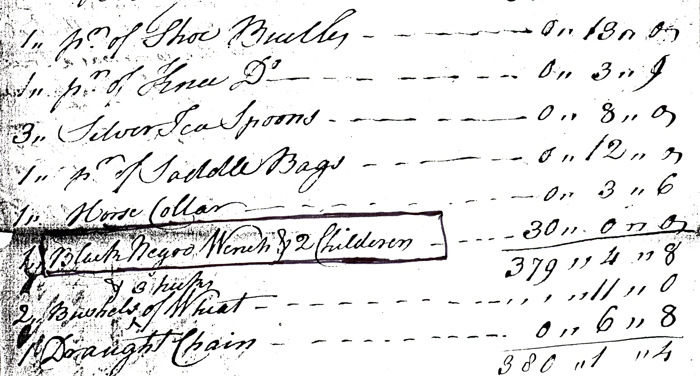
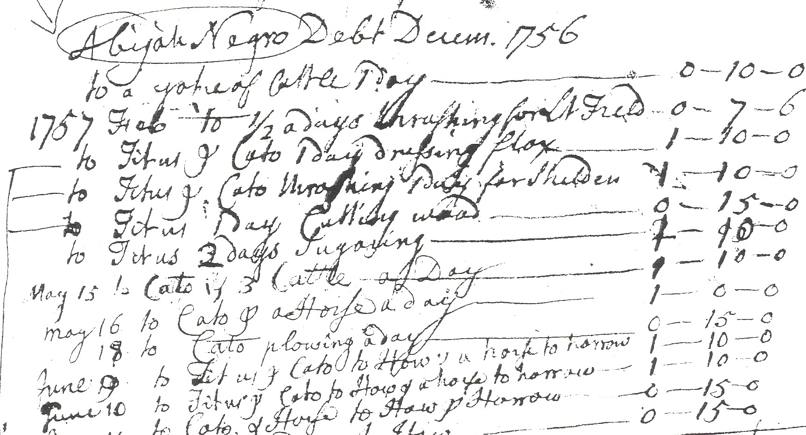
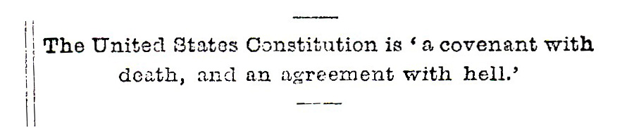

Slavery in the Connecticut Valley
Amherst College Reunion
June 1, 2007
Sponsored by the Class of 1952
Robert H. Romer (Amherst College, 1952)
The text that follows is an approximation of what I said on June 1. Because this talk was given at an Amherst College reunion, I included near the end quite a bit of Amherst College iniformation from the 19th century and beyond.
And since I had a computer projector available, I used it to include a Power Point slide show along with the talk.
These are the Power Point slides that I showed on June 1 –
1 Title
2-4 Thanks to TIAA/CREF, the Social Security Administration, and Amherst College
5 Ephraim Williams bill of sale
6 Map
7-8 Samuel Dickinson probate inventory - 2 excerpts
9 Champney house (Humphrey, Phillis, Caesar)
10 Wells-Thorn house (Lucy Terry, Caesar)
11 Jonathan Ashley’s account book
12 Table of Slave-Owning Ministers from the Valley
13 Manse (Prince)
14 Runaway ad
15 Dr. Williams’ house (“Our Poor Negro Girl”)
16 The “Our poor Negro Girl” letter
17 Ashley House (Jenny, Cato, Titus)
18 Map again
19 Ashley’s will
20 Death record
21-22 Garrison’s “Liberator” (Masthead and masthead detail)
23 Douglass picture
slide 1 - title ("Slavery in the Connecticut Valley ...")
Thank you for that generous introduction. And I want to thank the class of 52 for sponsoring this session. Before I begin, I want to thank my financial supporters:
TIAA/CREF, the Social Security Administration, and Amherst College (slides 2-4)
Seriously, not only has Amherst College paid me quite well for many years, but in the last few years (partly because of my own agitation), the college has begun to take more seriously the idea that emeritus professors continue to have scholarly interests. Amherst has paid my expenses to go to physics conferences, and – more to the point – the college gave me a modest grant to support my research into slavery here in the valley. I have a lot of other things to thank Amherst for as well, not the least being good students and good colleagues.
What I want to do today is to take you for a walk (unfortunately, a virtual walk). (You should have received a map when you came in.) First, though, I want to tell you how I got into this subject. When I retired 6 years ago, I decided to try being a house guide at Historic Deerfield. The house I chose to learn about was the home of the minister, Jonathan Ashley. The minister was usually the most important man in town, so that would give me the best chance of learning about history. I thought I knew a lot about our local history. I did, but it turned out that I was almost totally ignorant of one very important part of it.
As soon as I began looking into the story of Reverend Ashley, I learned that he owned 3 black slaves. This was not at all an original discovery on my part, but it was a surprise to me. The minister – a slave owner! This, I’m thinking, is more interesting than old furniture, and I began digging out everything I could find about slavery in the valley.
Now, before I go on, let me deal with a misunderstanding that often comes up when I begin to talk about this subject. People often think I’ll be talking about abolitionism and the Underground Railroad. I’ll have a bit to say about the 1800s later, but, no, I’m talking about slavery, right here, in colonial times.
To set the stage, let me read a legal document from 1750, the record of a transaction between two local residents.
Slide 5 – Ephraim Williams bill of sale
For and in consideration of the sum of two hundred and twenty-five pounds old tenor, to me Ephraim Williams Jr. well and truly paid by Israel Williams of Hatfield, I do hereby assign, sell and convey to him a certain negro boy named Prince aged about nine years, a servant for life, and do hold him and his heirs against the claims of any person whatsoever as witness my hand this 25th day of September anno Domini 1750.
Ephraim Williams, Jr.
If you weren’t listening carefully, you might have just heard a lot of legal jargon conveying a piece of property from one owner to another. And of course it was “just a piece of property” – the property was a nine-year old Negro boy.
We’re talking about slavery, right here in the Connecticut Valley, here in Amherst, and especially along the river in towns such as Hadley, Northampton, Hatfield, and Deerfield.
Ephraim Williams – I wonder whether anyone here recognizes the name of the signer of that bill of sale. Williams died in battle 5 years later, and in his will he left some money that eventually led to the founding of Williams College. He still owned slaves at the time of his death, and in the same document, his will, there is this passage:
“I give and bequeath unto my beloved brothers my homestead, with all the Buildings and Appertenances thereunto belonging, with all the Stocks of Cattle and Negro Servants.”
The fact that Williams was a slave owner is not prominently displayed in the college’s publicity brochures, but neither is it a secret. The complete text of his will is on the Williams College website.
Those documents – that bill of sale, that will – should convince any skeptic that slavery – owning, buying, and selling human beings – went on right here in colonial times.
As I started looking into this subject, for a while I was just collecting scraps of information from here and there. In trying to organize what I was learning, I had what turned out, I think, to be an inspiration. I decided to focus on a particular time and a particular place and to make what I call a “snapshot” of slavery, a map that shows who lived where and who they belonged to, on a particular street at a particular moment in history. As far as I know, no one has ever made such a map of a New England street before.
Slide 6 – Map. I chose a date of 1752, 250 years ago. And the place I chose was the main street of Deerfield. So with this map in hand (a map unlike any that you’ll be given as a tourist), let’s go for a walk. First, let’s go 15 miles up the river, to the main street of what is now Old Deerfield. And now let’s go back in time 250 years, to an early July morning in 1752. I want to walk up the street with you and introduce you to some of the people I’ve been learning about for the past 6 years. As we walk, I’ll need to step back from time to time into the 21st century, to tell you some of the things I’ve found out about the people we’re going to meet.
As we begin our walk, the first person we meet is Titus. Titus is a slave, the property of Daniel Arms, and he’s on his way to work on one of Arms’s farm lots, down by the river.
Several houses farther up the street, in front of Samuel Dickinson’s house, we meet a young woman coming out to draw water from the well. I don’t know her name; all I know of her comes from Dickinson’s lengthy probate inventory, which reads in part –
Slide 7. Excerpt from Samuel Dickinson's probate inventory.

“One pair shoe buckles 13 shillings,
one pair knee buckles 3 and 6,
3 silver spoons 8 shillings,
one pair saddle bags 12 shillings,
one horse collar 3 and 6,
Black Negro Wench and Two Children 30 pounds,
2 bushels and 3 pecks of wheat 11 shillings,
draft chain 6 and 8", and so on.
Black Negro Wench and Two Children – In that same document, where the slaves are nameless, the horses are actually listed by name: “Nancy Dawson, a bay mare”, for instance.
Slide 8 – Another excerpt from Samuel Dickinson's probate inventory., excerpt 2 –

The next house is the home of Caesar, who is not in evidence this morning – probably already at work in the fields. Across the street is the imposing home of Humphrey, Cesar, and Phillis, – Slide 9 – Champney house —

3 black slaves who belong to Timothy Childs. Humphrey was baptized earlier this year, but I don’t know anything else about him. Phillis is one of 3 young women who used to belong to Nehemiah Bull, the minister of Westfield, but were sold to new owners in various towns when Bull died 10 years ago. There is also another Cesar who lives here. I have to apologize for the fact that you’ll be hearing about 5 different Cesars this morning. When I first began to meet these people, I found it difficult to keep them straight. Most of the slaves who live here have no surnames, and that makes it difficult to remember who’s who, especially because the Deerfield owners seem fond of assigning cute classical names such as Cesar, Titus, and Cato to their slaves. But as you get to know them, you begin to realize that they are all different individuals, with their own histories, their own lives, their own hopes and disappointments.
As we go farther up the street, we see a young woman, about 25 years old, working in the garden behind Ebenezer Wells’s house. – Slide 10 – Wells-Thorn house —

This is Lucy Terry, the only one of the Deerfield slaves who uses a surname, though it’s only a name taken from that of her former owner in Enfield, Connecticut. Six years ago a war party of Indians raided Deerfield, and five Deerfield men were killed. Lucy composed a poem about that event, a poem that she often recites. She will eventually become known as “America’s First Black Poet”. Mr. Wells also owns a male slave, Caesar (the 3rd Caesar we’ve met so far this morning), about whom very little is now known.
Farther up the street, we see a man (I don’t know his name) working in front of Major Williams’s store, one of two slaves that the Major owns. This reminds me of something I should have told you about earlier, when we met Titus, Daniel Arms’s slave. Sometime last year, Titus and several of his fellow slaves decided (in the words of Pliny Arms, a descendant of Daniel) “to have a frolic. They pilfered rum from the store of Major Williams, eggs butter and bread from some pantry, and chickens from some hen-roost and met at some place of resort to cook their meal and enjoy themselves.” They were discovered and taken to the town whipping post, (here on the common, right in the midst of what is now Deerfield Academy), where “Titus, Daniel Arms’s negro, was the first drawn up. His back was laid bare and Major Catlin plied with all his force the cat-gut”. Undoubtedly there were other occasions on which slaves (and others) were whipped, but this is the only surviving written description of a whipping in Deerfield.
Near the common we meet Deerfield’s minister, Reverend Jonathan Ashley, walking with his two male slaves, Cato – a boy of 14 – and Titus – a grown man of 25. Ashley often rents Cato and Titus to various Deerfield farmers; indeed, one of those to whom Ashley occasionally rents Cato and Titus is Abijah Prince, the one free black in town – and that is where Cato and Titus are headed today. In Ashley’s account book, he refers to Abijah Prince as “Abijah Negro”, as if “Negro” were Abijah’s last name. (Point out a couple of entries with laser.)
Slide 11 - Excerpt from Jonathan Ashley's account book, showing amounts owed to Ashley by "Abijah Negro" for work done by Ashley's two male slaves, Cato and Titus.

Ashley is not the only minister who owns slaves. In fact, most of the ministers in this valley own slaves: John Williams, Ashley’s famous predecessor in Deerfield, owned two slaves who were killed during the big French and Indian raid back in 1704 and bought two more when he returned from captivity in Canada. Abijah Prince used to be the property of Benjamin Doolittle, minister of Northfield, Jonathan Edwards of Northampton owns several black slaves, so does David Parsons, my own minister down in Amherst, and there are many other slave owning ministers in the valley. I began to collect slave-owning ministers from the valley; at last count, I had 21. By now, it’s surprising to me when I find a colonial minister who was not a slave owner. (You’ll notice that about half of these ministers graduated from Harvard, the rest from Yale. And not one, I am pleased to say, graduated from Amherst.)
Slide 12 -- Slave-owning ministers from the valley.
Reverend Ashley (a formidable looking man, only 40 years old but already described as “venerable”) is not someone to be trifled with. Ashley has occasionally given a special sermon to the assembled slaves of the town, in which he explains at length that slavery is perfectly in accord with the Bible and that they may become free in the next world, but, as Ashley tells them:
“You must be contented with your State & Condition in this world and not murmur and complain of what God orders for you.”
Farther up the street, just before we go down a small hill, we pass Joseph Barnard’s house (in the 20th century the official residence of Deerfield Academy’s Head of School). This is where Barnard’s slave Prince (not to be confused with AbijahPrince), used to live.
Slide 13 - The "Manse"

Prince ran away in 1749, and Barnard placed an advertisement in a Boston Newspaper –
Slide 14 – Runaway ad.

“Ran-away from his Master, Joseph Barnard of Deerfield
a Negro Man named Prince, of middling Stature,
his Complection not the darkest or lightest for a Negro,
slow of Speech, but speaks a good English; He had with
him when he went away an old brown Coat with
Pewter Buttons, a double-breasted blue Coat with a Cape
and flat metal Buttons, a brown great Coat with red
Cuffs and Cape, a new brown Jacket with Pewter Buttons,
a Pair of new Leather Breeches, Castor Hats, several
Pair of Stockings, a Pair of Pumps, A Gun and A Violin.
Whoever shall apprehend said Fellow and convey him
to his master, shall have Ten Pounds old Tenor, and all
necessary Charges paid by
Joseph Barnard”
Prince was brought back to Deerfield, but just a month ago, in June of this year, he passed away, and Barnard paid carpenter James Couch 2 pounds to make him a coffin. But where Prince was buried no one knows.
As we go on up the street we pass the homes of more Deerfield slaves, some of whom we see at work around their owner’s houses.
Slide 15 – Dr. Williams house.

There is a young woman here who belongs to the town doctor, Thomas Williams. She is known to us only as “our poor Negro girl”. That is how she was described in a 1757 letter (the only known letter that even mentions any of the town’s slaves), where Dr. Williams, who has treated several of the town’s slaves, wrote:
“Our poor Negro girl is yet living after 36 days confinement with the Slow fever; her Case Appears as yet very dubious, her blisters much canker’d, turniped, & threaten a Mortification, thro the acrid, putred & Alkaline State of her blood, & medicines have not (nor ever had in my practice) much sensible effect upon that Nation.”
Slide 16 – “Our poor Negro girl...” letter.

And then there is Ishmael, two more Caesars, and Mesheck. Mesheck has been moved around town during his time here, as the property of 4 different owners in succession. First he belonged to Reverend John Williams, and when Williams died in 1729, his probate inventory listed “the Molatto boy Mesheck”, right in the midst of the furniture and the dishes.
Mesheck then became the property of Williams’ daughter Sarah, who died at an early age a few years later. (Town gossips say that she had expected to marry the new minister, Jonathan Ashley, but “died of a broken heart” when he married someone else.) Mesheck then passed into the possession of another Williams daughter, Abigail, and when Abigail married Ebenezer Hinsdale, he became Hinsdale’s property. (When a woman married in those days, all her property – furniture, silverware, slaves, cows, everything – automatically became that of her husband.)
Finally, across the street is Reverend Ashley’s house.
Slide 17 – Ashley house.

You’ve already met his two male slaves, Cato and Titus, and now you see Jenny, Cato’s mother, out drawing water from the well behind the house. Jenny was born in Africa, captured as a young girl and brought to Boston, where Ashley bought her, together with her baby, in 1738. During her many years in Deerfield, Jenny collected buttons and shells to take back to Africa with her. She never made it, of course, but lived out her long life in Deerfield.
Making this map, this 1752 “snapshot”, has completely changed what goes through my head when I drive up that street. Not just beautiful old houses, but I see in my mind Titus, and Caesar, and Phillis, and “Black Negro Wench”, and all the others. And I can’t help thinking that some of those houses, probably, were built – in part – by slaves. You’ve been fortunate enough to meet many of the 21 slaves who lived on that street in 1752. These are people that most Deerfield visitors never meet or even hear about. To borrow Ralph Ellison’s term, these are the invisible men (and women) of our colonial past.
Twenty-one slaves on this mile-long street, a surprisingly large number, one that contradicts the received wisdom that there were never more than a very few slaves here at any one time. Enough so that there was probably a real black community embedded in the majority white community. Although the numbers were certainly smaller in outlying areas (and of course the numbers were much larger in the southern states), I maintain that the enslaved blacks played a very significant role in many western Massachusetts towns, not just Deerfield, of course, but in other prosperous valley towns such as Springfield, Hatfield, Hadley, and Northampton. Any discussion of colonial times here in western Massachusetts that does not include the slaves is misleading, incomplete, and just plain wrong – just as wrong as if there were no mention of women, children, and Native Americans.
There is so much, though, that we don’t know about the slaves and the lives they led. We don’t even know where they slept or where they ate. We have almost nothing but a few legal documents – all, of course, written by their white owners.
Even for Jenny, the Deerfield slave I know best, we have only three contemporary documents. One is Ashley’s will, with a sentence that goes like this: “ I give, devise, and bequeath to my beloved wife Dorothy Ashley my riding chair, my grey mare, two cows & ten sheep, also my easy chair, all the silver utensils which she brought with her at our marriage, my Negro woman servant Jenny, and also one half of all my household furniture...”, and so on.
Slide 19 – Ashley's will –

The second is an entry in the account book of shoemaker Zadock Hawks in which we read that Elihu Ashley, the minister’s son, once paid him a shilling to fix Jenny’s shoes. – The third is from the death records of 1808 (deaths of blacks were not even recorded in the 1700s): “Jenny, a black woman, age 90, killed by a fall.” No one knows where she was buried.
Slide 20 – Death record.

I have to confess that I have become emotionally involved with Jenny. (Betty, my wife, says she’s OK with this.) Now I know it’s irrational, but it still makes me angry that the Ashley family, with whom Jenny had lived for 70 years – most of that time as a slave – wouldn’t pay for even a small gravestone. (Well, they did fix her shoes, give them credit for that. And in her old age, when she was probably no longer useful, they did not do as they might have done, tell her she was now “free” and then put her out on the street.)
Sometimes people say to me that here in the valley “it was not really slavery, that they weren’t slaves but servants, that they were well treated, that they were ‘just like members of the family’ ”. Well, “servant” was the common term used for black slaves in colonial times, and it may be comforting to us to think that they were “just servants” and not slaves. But legally and in owners’ minds they were property, just like the furniture and the livestock. They were not “just members of the family”. They did not choose to come here, for them there was no light of freedom at the end of the tunnel, their children automatically became slaves like their parents.
And families could be separated by sale. Ashley bought Jenny and Cato together. But not every baby (or mother) was so fortunate. Here is a 1759 advertisement from a Boston newspaper:
“A Negro woman about 24 years of age, fit for town or country business, and a Negro girl about 7 years of age, both healthy and have had the smallpox [that’s a plus] – to be sold, together or apart. “ [I don’t find it easy to read those words.]
And another one, from 1756:
“To Be Given Away, two Negro Children, one a boy, the other a girl, neither of them a fortnight old.”
To be sure, there were differences between slavery in Massachusetts and slavery in South Carolina. But once one realizes that here in the Connecticut Valley some people owned other people, that slaves were simply property, listed as such on tax rolls and probate inventories, that families could be and were separated by sale, then the differences between one region and another seem less significant than the basic similarities. Slavery here in the picturesque “Pioneer Valley” really was slavery.
Now let me say a bit about modern times, that is, after about 1800, by which time slavery had gradually disappeared in Massachusetts – though not in many other northern states. During the 19th century, here in Massachusetts we began to practice what I call “deliberate amnesia”, remembering the “good stuff” – the abolitionist movement, the Underground Railroad, the Massachusetts 54th regiment that fought and largely died at Fort Wagner in 1863 -- while managing to forget that slavery itself had ever existed here. (I could show you an example of deliberate falsification of the historical record in an attempt to erase that inconvenient truth.)
The first Anti-Slavery Society in Massachusetts was founded in 1823 at Williams College. Here at Amherst, the students formed an Anti-Slavery Society in 1833. Amherst at that time in fact had two societies dedicated to ending slavery, one way or another. The “Anti-Slavery Society” was regarded as extremely radical by the faculty and a majority of the students. The second society was called the “Amherst College and Amherst Colonization Society”. By the fall of 1834, about one third of the students were members of the Anti-Slavery Society, but they were forced to disband after President Humphrey informed them that “the Society was alienating Christian brethren, retarding and otherwise injuring the cause of religion in College, and threatening in many ways the prosperity of the Institution”.
Although there was at least some anti-slavery agitation at all three of the western Massachusetts colleges (Williams, Mount Holyoke, and Amherst), few if any – students or faculty – seemed ready to welcome freed slaves into American society as equals. And the view of the colonizationists was that everyone, black and white, would be better off if the blacks were liberated and promptly sent to Africa.
Amherst’s first black student, Edward Jones, graduated in 1826, shortly after the college was founded. But the number of black students remained very small for well over a century. Our second black student, Wiley Lane, did not graduate until 1879. In the early 1900s, though the numbers were small, several prominent blacks graduated from Amherst: Charles Houston (1915), a leading civil rights lawyer; William Hastie (1925), the first black federal judge; Benjamin Davis (1925), elected to the New York City Council in 1943, a leader in the American Communist Party, indicted under the Smith Act in 1948; Charles Drew (1926), a prominent surgeon and medical researcher; Rick Haynes (1952), Ambassador to Algeria.
In my own entering class in 1948, there were two black students. (The generally accepted and all-too-plausible rumor was that every class was supposed to have two black students, who could then be assigned as room-mates.) In 1948, the Amherst chapter of a national fraternity, Phi Kappa Psi, made headlines by pledging a black student. Threatened with expulsion from the national fraternity, the undergraduates stuck to their guns and were indeed expelled, forming a local fraternity, Phi Alpha Psi, instead. It seems like such a small thing now, but in 1948 asking a black student to join an all-white fraternity made national news. Much has changed for the better during the last half century. The first black faculty member, Jim Denton, was appointed in 1964. Amherst fraternities, local as well as national, have, thankfully, disappeared. Of the 413 students who entered Amherst four years ago as members of the class of ‘07, 49 (12%) were African-Americans. And approximately 50% of the entering students were women; that, too, is a welcome change.
A couple of final comments. Why am I spending so much time looking into 18th century history? The pay, after all, is lousy. Well, historical research is indeed fun, just like physics research, especially at those moments when you find out something no one else knows because you haven’t told them yet. And I have learned that history research is harder than physics research. In physics, if the experiment doesn’t work or gives ambiguous results, you usually have a chance to take more data or redo the experiment – not so with history. But there’s more to it and the fun of research. As I’ve grown up, I’ve realized more and more how little I learned in school, how so much of what I learned was wrong, and how large a role the terrible institution of slavery has played in the founding and the history of our country.
William Lloyd Garrison, our passionate 19th-century abolitionist editor, understood that. – Slide 21- Garrison (1) – Prominently featured on page 1 of every issue of his weekly newspaper, the Liberator, was the statement: Slide 22 – Garrison (2)
“The United States Constitution is a covenant with death, and an agreement with hell.”
Slide 21 - Garrison's "Liberator", the masthead

Slide 22 - Excerpt from the masthead

So did Frederick Douglass,
Slide 23 - Douglass

– in a Fourth of July speech in 1852 to the Rochester, New York Ladies' Anti-Slavery Society – Could abbreviate this. (As in bold below)
This Fourth of July is yours, not mine. What, to the American slave, is your 4th of July? I answer: a day that reveals to him, more than all other days in the year, the gross injustice and cruelty [of] which he is the constant victim. To him, your celebration is a sham; your boasted liberty, an unholy license; your national greatness, swelling vanity; your sounds of rejoicing are empty and heartless; your shouts of liberty and equality, hollow mockery; your prayers and hymns, your sermons and thanksgivings, with all your religious parade, and solemnity, are, to him, mere bombast, fraud, deception, impiety, and hypocrisy — a thin veil to cover up crimes which would disgrace a nation of savages. There is not a nation on the earth guilty of practices, more shocking and bloody, than are the people of these United States, at this very hour.
And it was not just a matter of supposedly virtuous Yankees having had to compromise with evil southerners in writing the Constitution. In the 18th century slavery was just as acceptable here as it was down south. Most of the ministers in the valley were slave owners. So were many of the other important people – judges, military officers, successful merchants.
The after-effects of slavery didn’t miraculously go away in 1865 or in 1954. I think it’s important to know as much about it as we can, to realize how widespread it was, that it wasn’t just a regional phenomenon that we can blame on the southerners.
Of course there were regional differences. But once one understands that the basic obscenity of one human being owning another human being was not only legal but almost universally approved of and accepted even here in the valley, one begins to appreciate how embedded slavery is in our history.
I wish that were not true. But it is. At the end of the American Revolution, slavery was legal and practiced in every one of the original 13 states.
(Skip this for now. This belongs earlier, if at all.) I must say that I have very little patience with those who say – “Well, we have to understand that things were different back then”. Slavery is wrong now and it was wrong then, and those ministers, deep down inside, knew it was wrong.
Knowing the history of slavery and understanding how central a role it played in the history of our country can help us to deal with its continuing legacy.
Go visit Deerfield. Take my map with you. And think about those houses and who lived in them.
Thank you.
--------------------------------------------------------------------------------------------------------------------------------------------------------------------------------
Note: My email adddress and webaddress are on the map.
Of the many talks that I have given on slavery in the valley, this is the first one in which I had some accompanying Power Point slides. For the most part, these slides were a mixture of colonial-era documents and photographs of some of the existing Deerfield houses in which slaves lived in colonial times. To me, it makes a real impression to be standing in front of the “Ashley House”, for instance, and thinking: “This is where Jenny and Cato and Titus lived, right here on the spot where I am standing now”. But photos are not the same as actually being there. My wife, Betty Romer, opined after the talk that using the house photos this way was not the best way to do it. The houses are indeed handsome, and this might give the listener and viewer the subconscious impression that perhaps the slaves’ lives weren’t so bad. Perhaps another time, if I use the house photos at all, I might first show a few house photos, say that this is the Deerfield that tourists these days actually see, and then say that I am now going to show another and very different version of reality. The documents, Betty thinks (and I agree) are devastating, especially when you see something like the original 18th-century handwriting on a bill of sale or a probate inventory – Let’s be careful not to detract from the impression they convey.